Curation Report
Time: 2024-07-30 12:06:13
Version: 0.1.4.dev10+g6715566
mol_curation
Logs
- New column added: MOL_smiles
- New column added: MOL_molhash_id
- New column added: MOL_molhash_id_no_stereo
- New column added: MOL_num_stereoisomers
- New column added: MOL_num_undefined_stereoisomers
- New column added: MOL_num_defined_stereo_center
- New column added: MOL_num_undefined_stereo_center
- New column added: MOL_num_stereo_center
- New column added: MOL_undefined_E_D
- New column added: MOL_undefined_E/Z
- Default `ecfp` fingerprint is used to visualize the chemical space.
- Molecules with undefined stereocenter detected: 9.
Images
Distribution in Chemical Space - ECFP

Molecules with undefined stereocenters
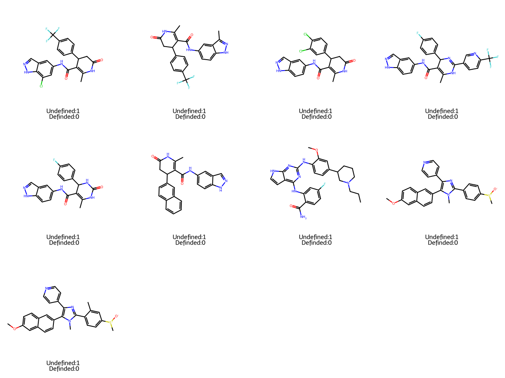There are 9 molecules with undefined stereocenter(s). It's recommended to use and check the stereoisomers and activity cliffs in the dataset.
discretize
Logs
- New column added: CLS_EGFR
Images
Data distribution - EGFR
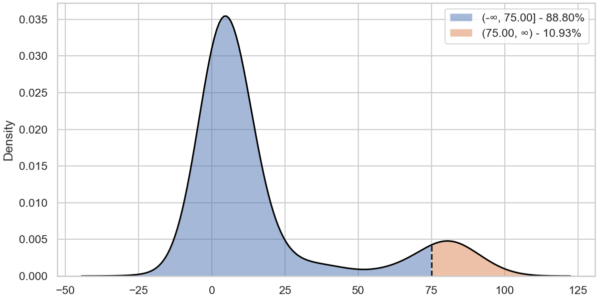discretize
Logs
- New column added: CLS_EGFR_L858R
Images
Data distribution - EGFR_L858R

discretize
Logs
- New column added: CLS_KIT
Images
Data distribution - KIT

discretize
Logs
- New column added: CLS_KIT_T6701
Images
Data distribution - KIT_T6701
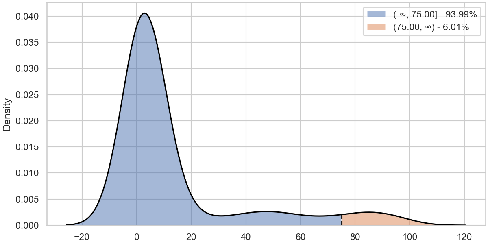discretize
Logs
- New column added: CLS_KIT_V560G
Images
Data distribution - KIT_V560G
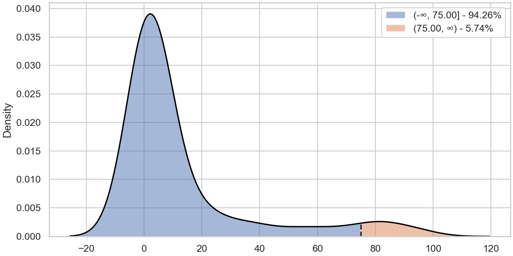discretize
Logs
- New column added: CLS_RET
Images
Data distribution - RET

discretize
Logs
- New column added: CLS_RET_V804L
Images
Data distribution - RET_V804L

discretize
Logs
- New column added: CLS_RET_Y791F
Images
Data distribution - RET_Y791F

outlier_detection
Logs
- New column added: OUTLIER_EGFR_L858R
- Found 1 potential outliers with respect to the EGFR_L858R column for review.
- New column added: OUTLIER_EGFR
- Found 1 potential outliers with respect to the EGFR column for review.
- New column added: OUTLIER_KIT_T6701
- Found 12 potential outliers with respect to the KIT_T6701 column for review.
- New column added: OUTLIER_KIT_V560G
- Found 13 potential outliers with respect to the KIT_V560G column for review.
- New column added: OUTLIER_KIT
- Found 0 potential outliers with respect to the KIT column for review.
- New column added: OUTLIER_RET_V804L
- Found 3 potential outliers with respect to the RET_V804L column for review.
- New column added: OUTLIER_RET_Y791F
- Found 0 potential outliers with respect to the RET_Y791F column for review.
- New column added: OUTLIER_RET
- Found 0 potential outliers with respect to the RET column for review.
Images
Outlier detection - EGFR_L858R
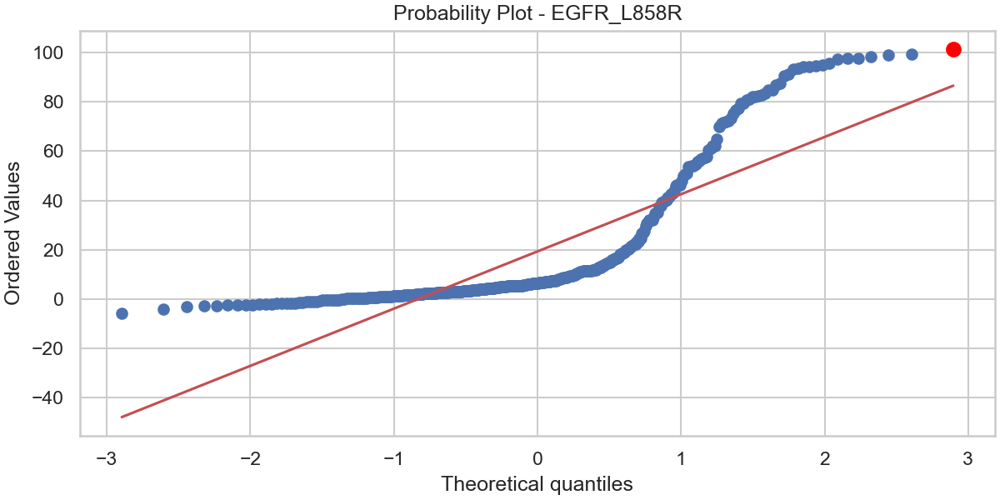Outlier detection - EGFR
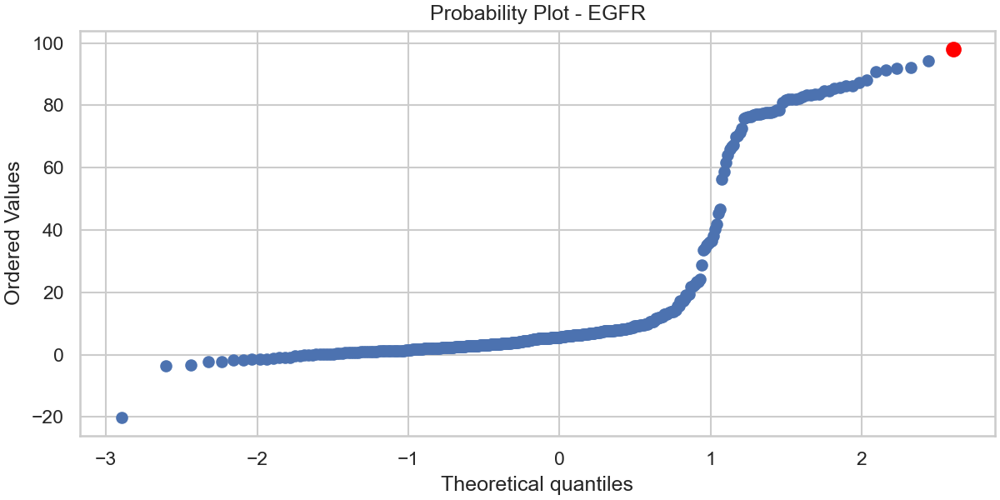Outlier detection - KIT_T6701
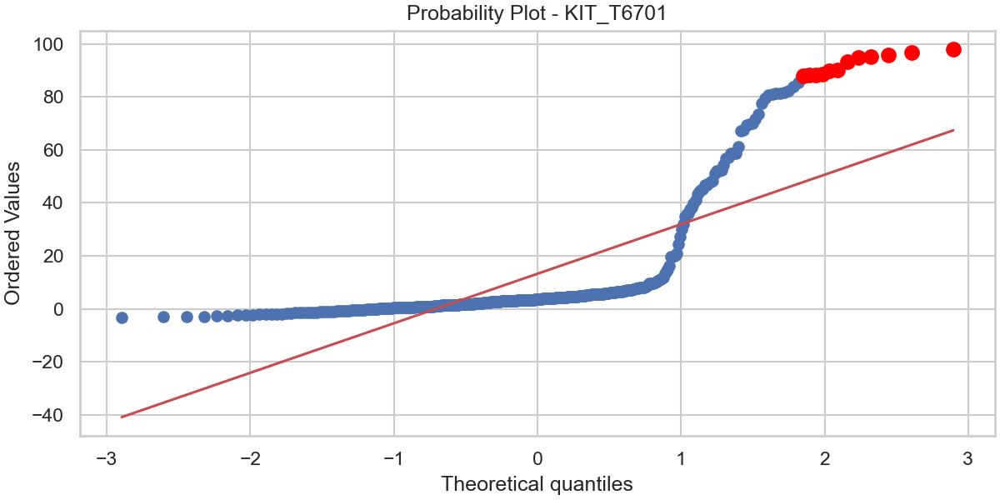Outlier detection - KIT_V560G
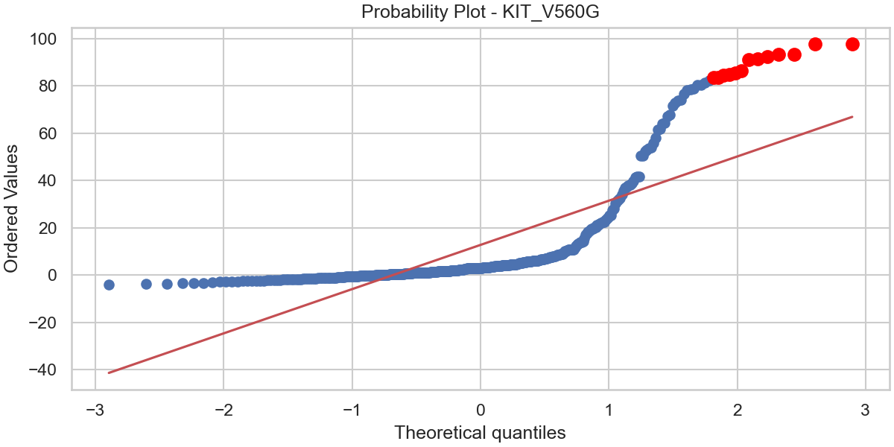Outlier detection - KIT
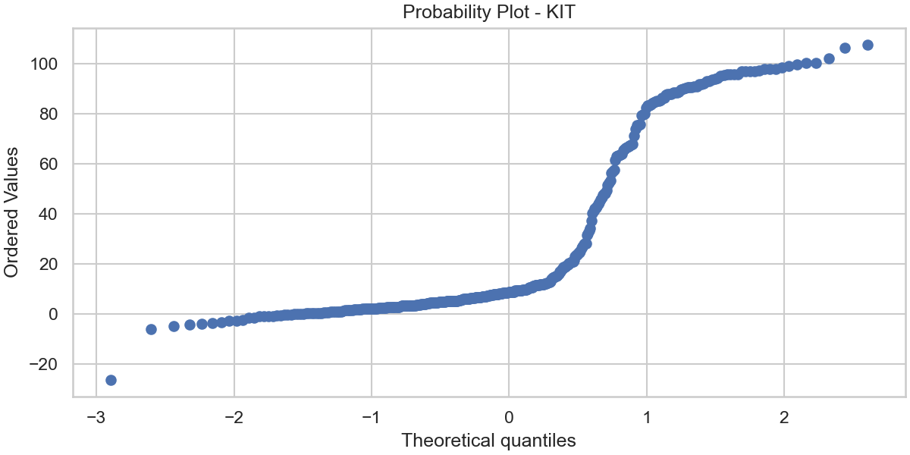Outlier detection - RET_V804L
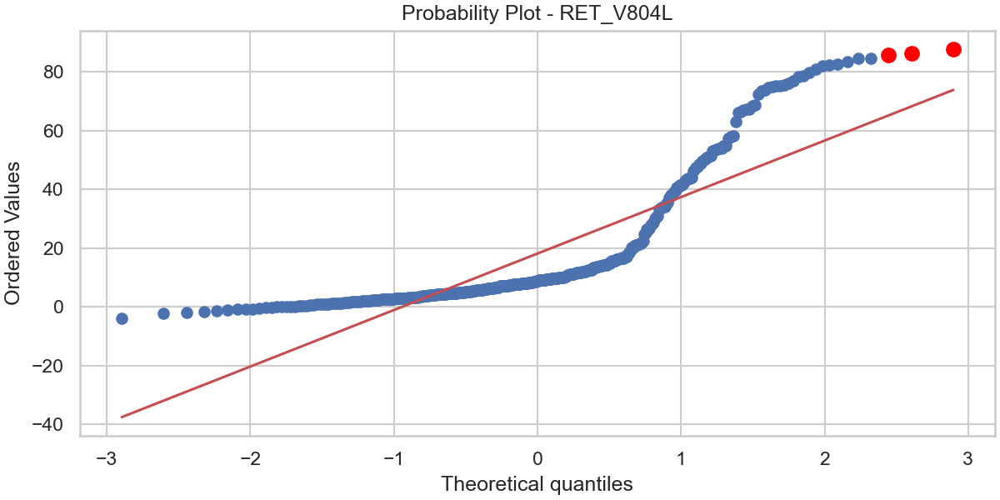Outlier detection - RET_Y791F
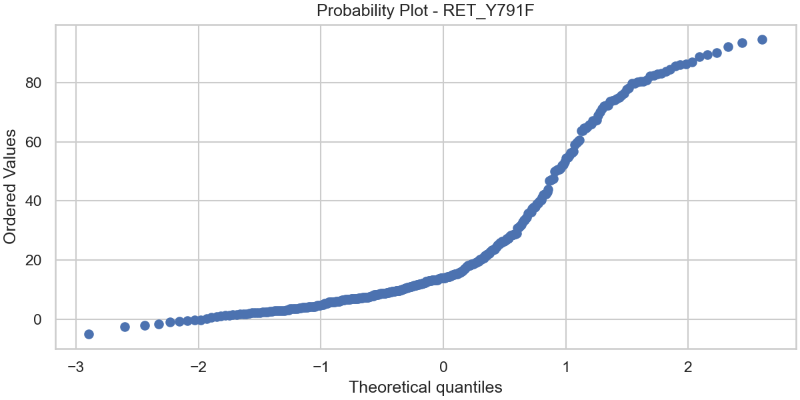Outlier detection - RET
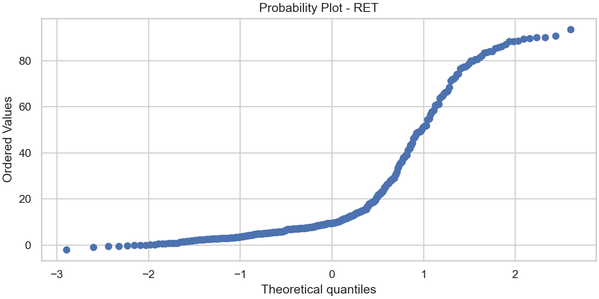ac_stereoisomer
Logs
- New column added: AC_CLS_EGFR_L858R
- Found no activity cliffs among stereoisomers with respect to the CLS_EGFR_L858R column.
- New column added: AC_CLS_EGFR
- Found no activity cliffs among stereoisomers with respect to the CLS_EGFR column.
- New column added: AC_CLS_KIT_T6701
- Found no activity cliffs among stereoisomers with respect to the CLS_KIT_T6701 column.
- New column added: AC_CLS_KIT_V560G
- Found no activity cliffs among stereoisomers with respect to the CLS_KIT_V560G column.
- New column added: AC_CLS_KIT
- Found no activity cliffs among stereoisomers with respect to the CLS_KIT column.
- New column added: AC_CLS_RET_V804L
- Found no activity cliffs among stereoisomers with respect to the CLS_RET_V804L column.
- New column added: AC_CLS_RET_Y791F
- Found 4 activity cliffs among stereoisomers with respect to the CLS_RET_Y791F column.
- The molecule index are : 136 ,137 ,302 ,309
- New column added: AC_CLS_RET
- Found 2 activity cliffs among stereoisomers with respect to the CLS_RET column.
- The molecule index are : 136 ,137